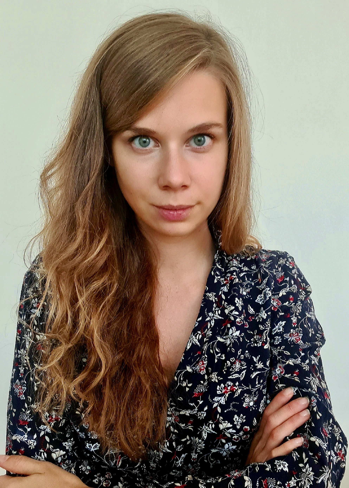

|
Natasa Tagasovska I am Principal Machine Learning Scientist and Scientific Manager at Prescient Design, Genentech in the Frontier Research team. My interests have always revolved around causal learning and uncertainty estimation, and recently I get to explore the capabilities of such ML methods within applications in computational biology. Prior to Prescient, I was a Sr. Data Scientist at the SDSC at EPFL-ETHZ, where I worked on interdisciplinary projects, applying ML to physical and social science research efforts. I hold a PhD in Statistics from University of Lausanne and a BS and MSC in Computer Science and Engineering. During my studies I interned at Facebook (Meta) AI Research and NATO. Get in touch if you want to chat more about research or life at Prescient! At Google I've worked on Glass, Lens Blur, HDR+, VR, Portrait Mode, Portrait Light, and Maps. I did my PhD at UC Berkeley, where I was advised by Jitendra Malik. I've received the PAMI Young Researcher Award. |
 |
{kind=link}
ResearchAt Prescient Design (ML for Drug Discovery) my projects include generative modeling of molecules, aiming at designs that conform with multiple properties of interest. Hence, I'm also interested in Pareto optimal design and selection, while exploring multiple data modalities large and small molecules, as well as genomics data. |

|
Antibody DomainBed: Out-of-Distribution Generalization in Therapeutic Protein Design
Natasa Tagasovska Ji Won Park*, Matthieu Kirchmeyer, Nathan C Frey, Andrew Martin Watkins Aya Abdelsalam Ismail Arian Rokkum Jamasb, Edith Lee, Tyler Bryson, Stephen Ra, Kyunghyun Cho, arXiv, 2023 arXiv Releasing a dataset of antibody-antigen binding energy emulating distribution shifts across active drug design cycles, and the accompanying backbones suitable for large molecules. |

|
Nuvo: Neural UV Mapping for Unruly 3D Representations
Pratul Srinivasan, Stephan J. Garbin, Dor Verbin, Jonathan T. Barron, Ben Mildenhall arXiv, 2023 project page / video / arXiv Neural fields let you recover editable UV mappings for the challenging geometries produced by NeRF-like models. |
|
Feel free to steal this website's source code. Do not scrape the HTML from this page itself, as it includes analytics tags that you do not want on your own website — use the github code instead. Also, consider using Leonid Keselman's Jekyll fork of this page. |